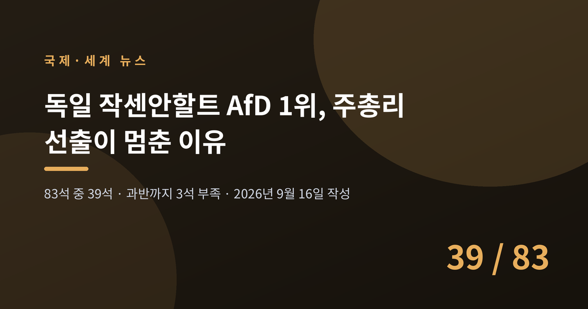
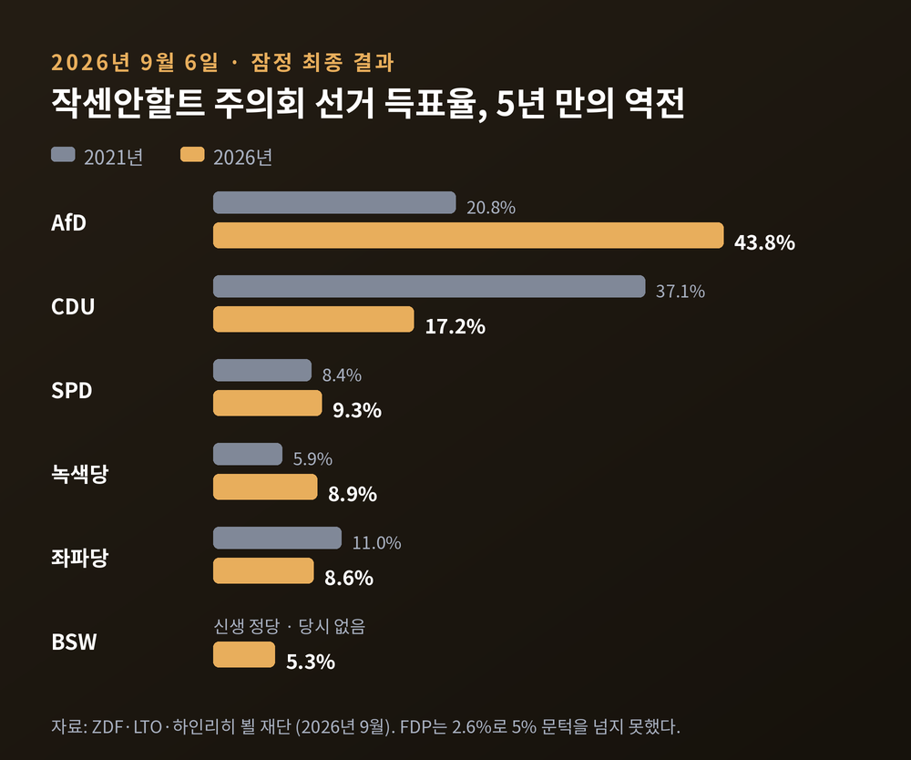
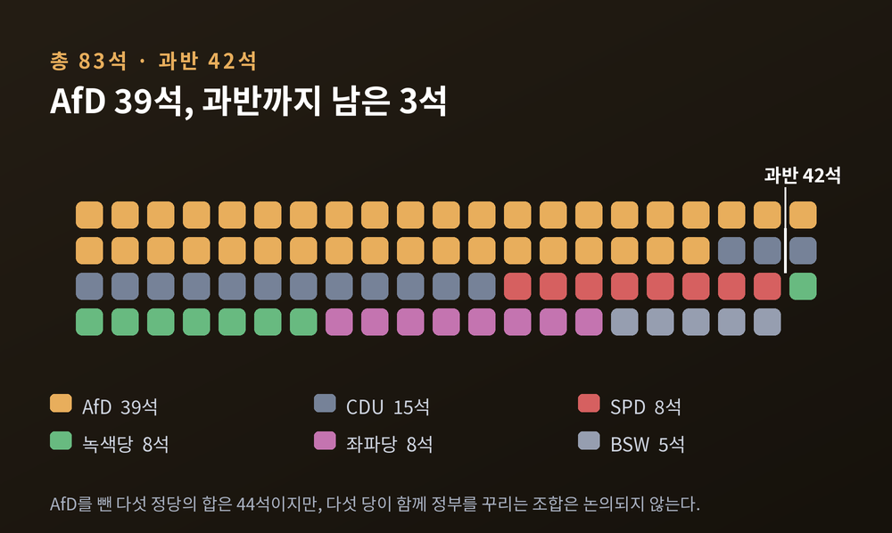
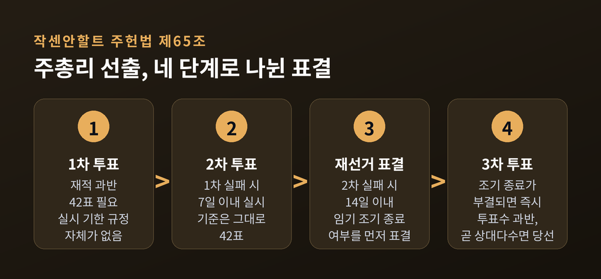
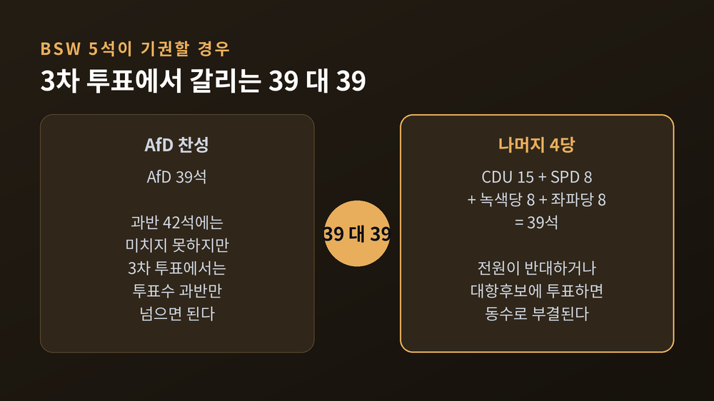
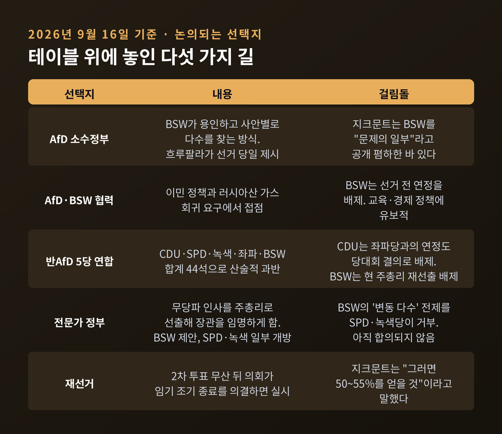
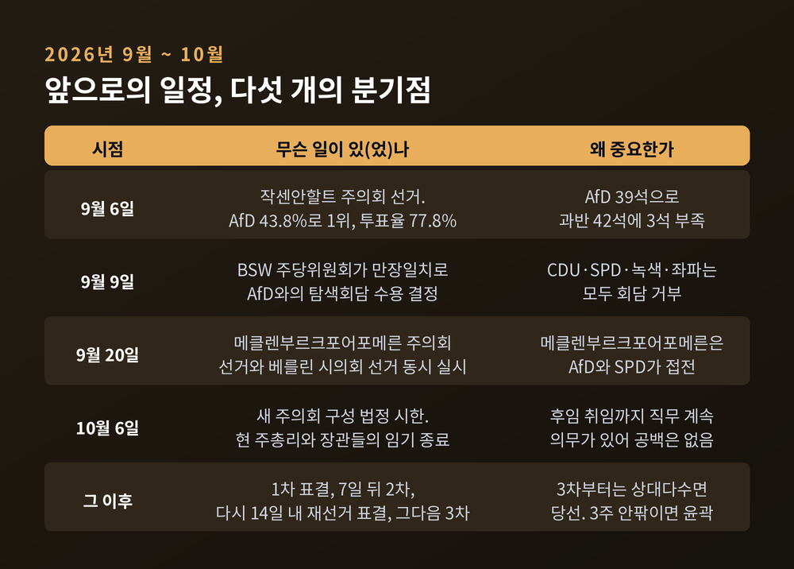

이번 글에서는 독일 작센안할트주에서 벌어지고 있는 정부 구성 교착을 정리해 보겠습니다. 선거 결과 자체보다, 투표 이후 열흘 동안 무엇이 일어났는지에 초점을 맞췄습니다. 사실과 각 진영의 주장은 구분해 적었습니다.
세 줄 요약

작센안할트는 인구 210만 명, 유권자 170만 명 규모의 주입니다. 독일 16개 주 가운데 큰 편이 아닙니다.
그런데 9월 6일 이곳의 주의회 선거 결과가 독일 전체를 흔들었습니다.
극우 성향의 AfD(독일을 위한 대안)가 43.8%를 얻어 1위를 차지했습니다. 2021년 20.8%에서 23%포인트가 올랐습니다. 독일 통일 이후 작센안할트에서 어느 정당도 기록하지 못한 최고치입니다.
집권당이던 CDU는 37.1%에서 17.2%로 반토막이 났습니다. SPD 9.3%, 녹색당 8.9%, 좌파당 8.6%였고, 신생 정당 BSW가 5.3%로 처음 원내에 들어왔습니다. 연정에 참여했던 FDP는 2.6%로 5% 문턱을 넘지 못하고 의회에서 사라졌습니다.
투표율은 60.3%에서 77.8%로 뛰었습니다. 무관심한 선거가 아니었습니다.

의석으로 보면 그림이 더 분명해집니다.
AfD 39석, CDU 15석, SPD·녹색당·좌파당 각 8석, BSW 5석. 모두 83석입니다. 과반은 42석입니다.
AfD는 41개 지역구 중 38곳에서 1위를 했습니다. 좌파당이 할레 II·III와 마그데부르크 II 세 곳에서 직접 의석을 지켜냈습니다.
AfD를 뺀 나머지 다섯 정당의 의석을 모두 합치면 44석입니다. 산술적으로는 과반입니다. 다만 CDU부터 좌파당, BSW까지 다섯 정당이 함께 정부를 꾸린다는 것은 어느 쪽도 상상하지 않는 조합입니다.
결국 AfD는 3석이 모자라고, 반대편은 함께 앉을 수 없습니다. 이것이 지금 교착의 뼈대입니다.

독일 주총리 선출 절차는 나라마다, 주마다 다릅니다. 작센안할트 주헌법 제65조는 이렇게 규정합니다.
주총리는 토론 없이 비밀투표로 뽑습니다. 1차 투표에서는 재적 과반인 42표가 필요합니다. 실패하면 7일 안에 2차 투표를 합니다. 여기서도 기준은 42표입니다.
2차까지 실패하면 그다음이 독특합니다. 곧바로 3차 투표로 가지 않고, 14일 안에 의회가 '임기를 조기에 끝낼 것인가', 즉 재선거를 할 것인가를 먼저 표결합니다. 여기에도 재적 과반이 필요합니다.
이 조기 종료안이 부결되면 즉시 3차 투표가 열립니다. 이때 기준이 바뀝니다. 재적 과반이 아니라 투표수 과반, 곧 상대다수면 당선입니다.
재적 과반을 확보하지 못한 후보도 3차에서는 주총리가 될 수 있다는 뜻입니다.
한 가지 더 있습니다. 1차 투표를 언제 해야 하는지에 대한 기한은 없습니다. 2020년 의회개혁 때 '구성회의 후 14일 이내'라는 조항이 삭제됐습니다. 협상이 길어지면 표결 자체가 무기한 미뤄질 수 있습니다.

3차 투표 규칙이 정해지자 계산이 단순해졌습니다.
BSW는 AfD 후보 울리히 지크문트에 대해 3차 투표에서 기권하겠다고 예고했습니다. 5석이 빠지는 셈입니다.
그러면 남는 것은 AfD 39표와 나머지 39표입니다. CDU 15, SPD 8, 녹색 8, 좌파 8을 더하면 정확히 39입니다.
39 대 39. 동수입니다. 지크문트는 당선되지 못합니다.
AfD에는 최소 한 표가 더 필요합니다. 다른 교섭단체에서 찬성 한 표가 나오거나, 한 명이 더 기권하거나 자리를 비우면 됩니다.
여기서 두 가지가 겹칩니다. 독일 의원은 교섭단체 지침에 법적으로 구속되지 않고 양심에만 따릅니다. 그리고 주총리 선출은 비밀투표입니다. 이탈표가 나와도 누가 던졌는지 사후에 특정할 수 없습니다.
AfD 인사들은 CDU 의원들과 대화가 있다고 말해 왔습니다. 다만 이름도, 근거도 제시된 적이 없습니다. 확인되지 않은 이야기로 남아 있습니다.

9월 16일 현재, 논의되고 있는 경우의 수는 다섯 갈래입니다.
첫째, AfD 소수정부. AfD 연방대표 티노 흐루팔라가 선거 당일 밤 꺼낸 안입니다. BSW가 용인하고 사안별로 다수를 찾는 방식입니다. 주헌법은 주총리 선출만 요구할 뿐 안정적 다수나 연정협약을 요구하지 않으므로 법적으로는 가능합니다. 다만 지크문트는 BSW를 "해법이 아니라 문제의 일부"라고 공개 폄하한 바 있습니다.
둘째, AfD와 BSW의 협력. 두 당은 강경한 이민 정책과 러시아산 가스 회귀 요구에서 접점이 있습니다. 반대로 BSW는 AfD의 교육·경제 정책에 유보적입니다. BSW는 선거 전 연정은 배제한다고 밝혔습니다.
셋째, 반AfD 5당 연합. 44석으로 산술적 과반입니다. 그러나 CDU는 당대회 결의로 좌파당과의 연정도 배제해 둔 상태이고, BSW 연방지도부는 현 주총리 스벤 슐체의 재선출을 배제한다고 못박았습니다. 사실상 닫힌 길입니다.
넷째, 전문가 정부. BSW가 제안했고 SPD와 녹색당 일부가 원칙적 개방 의사를 보인 구상입니다. 정당들이 공동 정부나 공통 강령을 만들지 않고, 정당에 속하지 않은 인물을 주총리로 뽑아 그가 장관을 임명하게 하는 방식입니다. 주헌법은 주총리와 장관이 의원일 것을 요구하지 않으므로 법적 장애는 없습니다. 무소속 시장, 대학 총장, 연구기관 경영진 등이 후보군으로 거론됩니다. 다만 BSW가 '변동 다수'를 전제로 AfD와도 사안별로 법안을 통과시킬 수 있다는 입장이어서, SPD·녹색당과 아직 합의되지 않았습니다.
다섯째, 재선거. 2차 투표가 무산된 뒤 의회가 조기 종료를 의결하면 열립니다. 지크문트는 선거 당일 "최악의 경우 재선거를 하면 된다. 그러면 50~55%를 얻을 것"이라고 말했습니다.
참고로 작센안할트는 소수정부 경험이 있는 드문 주입니다. 1994년부터 2002년까지 라인하르트 회프너(SPD)가 이른바 '마그데부르크 모델'로 8년을 이끌었습니다.

이 대목은 해석이 갈립니다. 한쪽으로 단정하지 않고, 확인된 조사 결과를 그대로 옮깁니다.
ARD 의뢰로 인프라테스트 디맙이 실시한 사후조사를 보면, 전체 응답자가 꼽은 투표 결정 요인 1위는 '사회적 안전'이었습니다. 약 4분의 1이 이를 골랐고 평화, 경제, 내부 치안, 교육이 뒤를 이었습니다. '이민'은 9%로 후순위였습니다.
그런데 AfD 투표자만 보면 순서가 달라집니다. 내부 치안 24%, 사회적 안전 18%, 이민 18%였습니다.
경제적 지표도 뚜렷합니다. AfD 투표자의 약 3분의 2가 자신이 다른 독일인에 비해 "적게 받는다"고 답했습니다. 다른 정당 투표자에서는 약 40%였습니다. 재정 상태가 좋다고 답한 유권자 중 AfD 지지는 27%였지만, 나쁘다고 답한 쪽에서는 65%였습니다. 주 전체에서 "물가를 감당하기 버겁다"는 응답이 70%, AfD 지지층에서는 89%였습니다.
한 해석은 구조적 요인을 봅니다. 작센안할트에는 고령화와 인구 감소를 겪는 농촌 지역이 많고, 주 남부 '화학 삼각지대'는 깊은 위기에 있습니다. 인텔 공장 유치 계획도 무산됐습니다. 사회심리학 연구들은 이런 태도가 실제 빈곤보다 '떨어질지 모른다는 두려움'과 더 관련 깊다고 봅니다.
다른 해석은 이민과 치안 이슈를 중심에 둡니다. AfD 지지층에서만 "우리 삶의 방식이 위협받는다", "외국인이 너무 많다"는 응답이 평균보다 뚜렷하게 높았습니다.
taz는 두 해석이 모두 타당하며 깔끔히 분리되지 않는다고 정리했습니다. 연금이 줄어들까 하는 걱정은 본질적으로 난민에 대한 공포라기보다 빈곤에 대한 공포에 가깝다는 지적도 함께 실었습니다.
동원 구조도 무시할 수 없습니다. AfD는 CDU에서 순 8만 3천 표가량을 흡수했고, 그보다 더 크게는 기권층을 끌어냈습니다. ZDF는 기권에서 AfD로 옮겨간 약 21만 5천 명이 높은 득표율을 설명한다고 분석했습니다. AfD 투표자 10명 중 4명은 후보 지크문트 때문에 찍었다고 답했습니다.
'방화벽(Brandmauer)'은 다른 정당들이 AfD와 연정이나 협력을 하지 않는다는 원칙을 가리킵니다. 지금 그 원칙이 시험대에 올랐습니다.
유지해야 한다는 쪽의 논거는 이렇습니다. 작센안할트 AfD 주지부는 주 헌법수호청이 '확실한 극우'로 분류한 조직입니다. CDU는 이 점을 협력 거부의 공식 사유로 밝혔습니다. 좌파당은 "선거전의 어조 차이가 아니라 우리 사회가 무엇에 기초하느냐의 근본 문제"라고 설명했고, 녹색당 주대표 주잔 지보라자이틀리츠는 회담 제안 자체를 거부했습니다.
법률매체 LTO의 논평은 행정권 장악의 위험을 구체적으로 짚었습니다. 주총리는 법관과 공무원 임명권을 가지며 이를 법무장관에게 위임할 수 있습니다. 정무직 공무원 교체도 가능한데, 여기에는 AfD 주지부를 극우로 분류한 내무부 헌법수호 담당 부서의 책임자도 포함됩니다. 검찰에 대한 지시권, 경찰 지휘·감독권, 연방상원에서의 주 대표권도 행정부의 몫입니다. AfD 선거강령은 '안티파 대응'을 최우선 과제로 명시했고, '자원 시민경비대'를 치안의 제3의 기둥으로 만들겠다고 적었습니다.
완화하거나 재검토하자는 쪽도 목소리를 냅니다. 흐루팔라는 "CDU가, 메르츠가 세운 방화벽이 어제 선거로 부결됐다"고 주장했습니다. BSW 주대표 토마스 슐체는 대화 자체를 거부하는 것이 "나쁜 정치적 태도이며 민주문화에 좋은 신호가 아니다"라고 했습니다. 자라 바겐크네히트는 "초당파적 주총리를 위한 대화 초대는 AfD에도 유효하다"고 밝혔습니다.
"일단 집권시켜 보라"는 주장도 있습니다. CSU 대표 마르쿠스 죄더가 집권 능력을 보여보라는 취지로 언급했고, 보리스 팔머 등도 비슷한 취지로 말했습니다. AfD가 실제로 통치하면 스스로 탈마법화될 것이라는 기대입니다. 반론도 분명합니다. LTO 논평은 이를 "무책임한 위험"으로 보면서, AfD가 실패하더라도 그 책임을 연방정치에 떠넘길 것이므로 탈마법화 기대 자체가 의심스럽다고 반박했습니다.
여론은 한 방향이 아닙니다. YouGov 9월 조사에서는 응답자의 절반 정도가 AfD와의 협력을 원천 배제하는 데 반대했습니다. 반면 인프라테스트 디맙 조사에서는 59%가 AfD를 극우 정당으로 본다고 답했습니다. 두 수치는 질문이 달라 단순 비교할 수 없습니다.
작은 주의 선거가 베를린을 흔들었습니다.
메르츠 총리는 충격을 표하면서도 본인 사퇴는 일축했습니다. 총리실장관 니나 바르켄은 지도부 인사 조치 요구를 물리치며 "지금 필요한 것은 안정"이라고 했습니다. 국무장관 필리프 암토어는 흑·적 연정의 개혁 노선을 흔들지 말라고 경고했습니다.
반대로 SPD 부대표 알렉산더 슈바이처는 연금개혁을 포함한 예정 법안을 다시 검토하자고 요구했습니다. 죄더는 "시대의 단절"이라 표현하면서도, 동시에 CDU가 무리하게 주총리 자리를 노려서는 안 된다고 선을 그었습니다. 작센 주총리 미하엘 크레치머는 "몇 주 지나 다시 일상으로 돌아가선 안 된다"며 유권자 동기에 대한 근본적 분석을 요구했습니다.
9월 9일 연방하원 예산 총괄토론에서 메르츠 총리는 AfD를 정면으로 겨눴습니다. "'리마이그레이션'이라는 단어는 출신과 피부색에 따른 인종청소의 동의어일 뿐"이라고 말했습니다. AfD 원내교섭단체는 이 발언을 이유로 총리를 형사 고발했습니다.
논쟁은 사법 영역으로도 번졌습니다. NRW 주총리 헨드릭 뷔스트는 AfD 정당해산 절차 검토를 제안했습니다. 9월 13일에는 독일 법관연맹이 AfD의 주정부 장악 가능성을 이유로 검찰에 대한 법무부 지시권 폐지를 요구했고, 연방법무장관 슈테파니 후비히는 헌법적 우려를 들어 난색을 표했습니다.
전국 여론조사에서도 AfD는 1위입니다. 9월 기준 ARD 도이칠란트트렌드 27%, INSA 29%, YouGov 28.8%였습니다. CDU/CSU는 20~21%로 역사적 저점에 있습니다.
가까운 일정부터 정리하면 이렇습니다.
9월 20일, 메클렌부르크포어포메른 주의회 선거와 베를린 시의회 선거가 같은 날 열립니다. 작센안할트 선거 불과 2주 뒤입니다. 메클렌부르크포어포메른에서는 ZDF 조사 기준 AfD 37%, 슈베지히 주총리의 SPD 34%로 접전입니다. 인프라테스트 디맙 조사에서는 AfD 35%, SPD 32%로 격차가 더 좁았습니다.
10월 6일은 작센안할트 새 주의회가 열려야 하는 법정 시한입니다. 이날 슐체 주총리와 장관들의 임기가 끝납니다. 다만 후임이 취임할 때까지 직무를 계속할 의무가 있어, 행정 공백은 생기지 않습니다. 상한 기한이 없으므로 과도정부가 길어질 수는 있습니다.
주총리 선출 신청이 접수되면 다음 본회의 안건으로 자동 상정됩니다. 첫 회의에서 곧바로 표결이 이뤄질 수도 있습니다. 1차 실패 후 7일, 그다음 14일이라는 시계가 돌아가므로, 10월 6일 이후 3주 안팎이면 윤곽은 잡힐 것으로 보입니다.
예전 독일 정치에서 주 하나의 정부 구성은 대체로 지역 뉴스였습니다. 지금은 연방 전체의 노선 논쟁이 이 표결 하나에 묶여 있습니다.

정리하면 이렇습니다.
작센안할트의 문제는 누가 이겼느냐가 아니라, 이긴 쪽이 3석 모자라고 진 쪽들이 함께 앉을 수 없다는 구조에 있습니다. 그 틈을 5석이 메우게 됐습니다.
"선거는 끝났지만, 셈은 이제 시작됐습니다."
10월의 표결이 어떻게 끝나든, 그 결과를 만든 조건들은 투표 이전부터 그 자리에 있었을 것입니다.